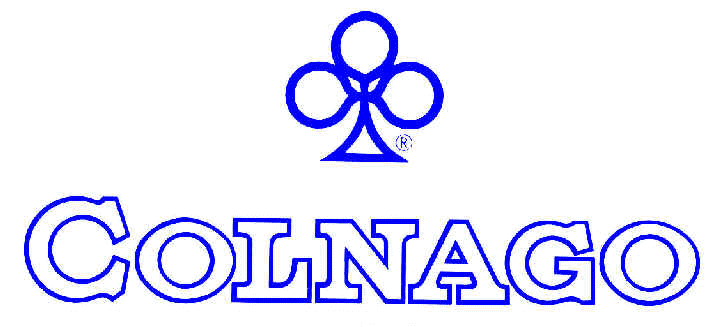
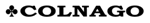

|
|
last modified:
10/4/07 |

1970s Colnago frame details
a work in progress, from
Eric E and others on the Classic
Rendezvous list.
Lugs:
1969: Cutouts in all 3 lugs, all clubs are the same size. Note however that
one experienced member recalls differently "I've never seen a Super with
cutouts all the same size. That would be physically impossible anyway,
based on the sizes of the lug tangs."
1970: Cutouts in all 3 lugs, but club in bottom head lug is now larger than
the other lugs.
1971: Cutouts in all 3 lugs, but club in bottom head lug is now larger than
the other lugs.
1972: 3 lugs cutout, all same size.
1973: 3 lugs cutout, all same size. There is general consensus on this too
but note again that an experienced member believes the single cut-out came
earlier; may have been as early as 1972.
1974: Cutout in bottom headlug only.
1975: Cutout in bottom headlug only.
General comments: the "fluffier/bulbous" club cutouts appear on the earlier
bikes. The smaller/leaner cutouts began to show up, give or take, sometime
after 1975.
Fork Crown:
1969: Two holes in each side of crown, crown itself is a sand cast type
crown. Some may also have Vagner forged crown, two holes in sides.
1970: First use of investment cast semi-sloping crown, two holes in each
side.
1971: IC crown, two holes in each side of crown
1972: IC crown, two holes in sides and club in top of each side of crown
for the first time.
1973: IC crown, club on top of each side of crown.
1974: IC crown, club in top of each side of crown.
1975: IC crown, club and "COLNAGO" on top of each side of crown.
There were numerous contributions supporting this but again, a experienced
member took the time to write "This is too early for the *Colnago* in
the crown. I think that came in by 1977 or so. The first generation
Mexico's had no "Colnago" in the crown, and their first year was
1975...earliest possible year for the Colnago stamp in the crown would be
1976, but I'm betting it was later than that.
Fork Tangs:
1969: Fork tangs are blank.
1970: Fork tang can be blank and a wide tang as opposed to the typical
narrower ones.
1971: Often blank narrow tangs.
1972: Narrow tangs with two holes, upper hole larger than lower hole.
1973: Some narrow tangs with two holes but now usually with club in
them.
1974: Tangs with clubs.
1975: Tangs with clubs
Seat Stay Caps:
Years??: Plain fluted, ??" length
Years??: Plain fluted, ??" length (I think the length changed)
Years:??: Fluted with "COLNAGO" cast along the flute length.
Rear Brake Bridge:
Years??: Round tube w/brazed on washer (facing the brake caliper),
reinforced at seat stays, for nutted brake bolts.
Years??: Round with square/cube area that accepts recessed brake bolt, (did
this have a club in the top?).
Bottom Bracket:
1969: Circular drilled holes pattern in BB shell.
1970: Club cutout in BB shell.
1972: Club cutout in BB shell.
1973: Club cutout in BB shell.
1974: Club cutout in BB shell.
1975: Club cutout in BB shell.
Dropouts:
1974/75: Sometime between '74 & '75 there should be a change from long
Campag drop-outs to the shorter ones.
Braze-ons:
197? & earlier: none except chain stay derailleur cable stop
197? - 197?: Above plus over BB cable guides
197? - 197?: Above plus shift lever mounts
197? - 197?: Above plus one set DT water bottle mounts
19?? - 19??: Above plus ST water bottle mounts
1976/77: Above plus first appearance of two TT brake cable guides (note
that the "Colnago" cast into the fork crowns definitely happened before the
addition of TT brake cable braze-ons).
Decals:
1968/69: The playing-card-style decals appeared on frames imported to North
America in 1968 or 1969.
1969: Playing card graphics.
1970: Playing card decals?
1971: Playing card graphics?
1972: Graphics change, now just Colnago on DT and first appearance of head
decal just a club with Colnago underneath.
1973: First appearance of "wreath" decal on seat tube, between the
bands.
1975: Another graphics change?
1977/78: Another graphics change?
Chrome:
Generally the Colnago crowns are chromed.
General comments: Sometimes the dropouts are chromed on these early
bikes.
This varies. Head-lugs were chromed sometimes also, nearly always on show
bikes..but not confined to them.
Colors:
some of standard colors known about -
1972/73: Turquoise/baby blue
Early/mid 70's: Candy green, candy red, candy blue, Molteni orange, yellow,
mauve metallic, black, silver, white, pearl white, electric blue,
salmon-metallic (similar to Cinelli Rose, but lighter), light purple
metallic.
General comments: some wrote to advise you could get a Colnago painted
nearly any color you can imagine.
Known variations:
With Colnago in the earlier years there are a few slight variations
possible, mainly in the fork tangs. One list member has a '74 with no fork
tangs at all. He also had a '74 that had a club in the bottom headlug and
the SEAT lug only, none in top headlug (he suspects a stray leftover cutout
seat lug). Another member also knows of an original '72 track bike with
road blades in a Vagner crown and no chrome. Finally two list members
have/had ~1975 frames where the crowns were painted, not chromed.
Mexico notes:
Early first-generation Mexico's looked just like older Supers, except for
the thinner tubing.
|
also
Chuck Schmidt's Colnago timeline: 1968 -- Playing card decal graphics (end of
year?) from CR list october 2007 |
|
This article appeared in California Cycling- A bi-monthly
bicycle touring and racing publication of Velo-Sport Cyclery.
January 1971. COLNAGO During the past several years, we have been searching for a top quality Italian racing frame of which we would be able to receive a readily availible supply. Last Year when Peter Rich was in Italy he made numerous inquiries about builders who would be able to supply us. We received samples of several different frames. After close examination of the frames workmanship, many months of testriding, it was decided that the frames built by Ernesto Colnago possessed excellent handling qualities and craftmanship. In the past we have dealt with other Italian builders and have sometimes waited two years to receive frames. We, therefore, made a preliminary order of ten frames, and we are happy in receiving the frames soon after placing the order. Meanwhile, last October two Velo-Sport employees were in Europe visiting various frame builders and bicycle manufactuers. Ther were most impressed by the shop facilities of Mr. Colnago. The shop is located about 20 miles outside of Milan in a new building , with six people working, including Mr. Colnago and his brother. They produce approximately 80 frames a month. The majority of these frames are ridden by Italian amateur and professional cyclists. He supplied frames for the 1960 and 1968 Italian Olympic team and the professional trade teams, Molteni and SCIC. Some of the prominent professional riders who will be riding Colnago frames next year are Eddy Merckx, Felice Gimondi, Gianna Motta and Michele Dancelli. Mr. Colnago has been involed in frame building and bicycle racing for many years. Each year, he serves as head mechanic for a trade team, for the Giro d' Italia and the Tour de France. He has also served as chief mechanic for the Italian national team in the Olyimpics and world championships. He either builds himself or closely supervises the construction of all his frames, unlike a number of other quality Italian frames imported into this country bearing one persons name, but built by someone else. We are thoroughly impressed with every aspect of Mr. Colnago's building ability. Because of this, we are happy to be the first importer of his bicycle into the country. At present, we have five frames left (two 54cm, 53cm, 56cm and 58cm). In January, we will receive twenty all blue completed bicycles, (two of sizes: 50, 52, 54, 56, 57, 58, 60, 62, and 64cm). In March or April, 100 frames are expected in assorted sizes and colors in addition to five track frames. We plan to keep 30 to 40 frames on hand at all times. They are selling for $175 ($410 as a complete bicycle) now, which is comparable to other bicycles of similar quality. |
home | official Colnago site |
Colnago page -
Classic
Rendezvous |
50th anniversary Ernesto Colnago interview | V é l o - R
é t r o - catalog reprints